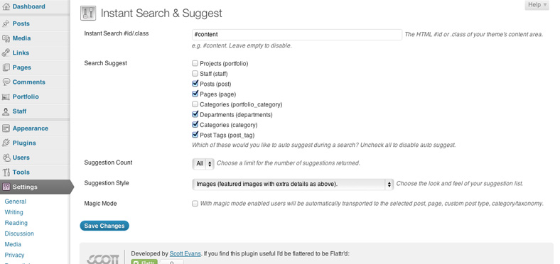
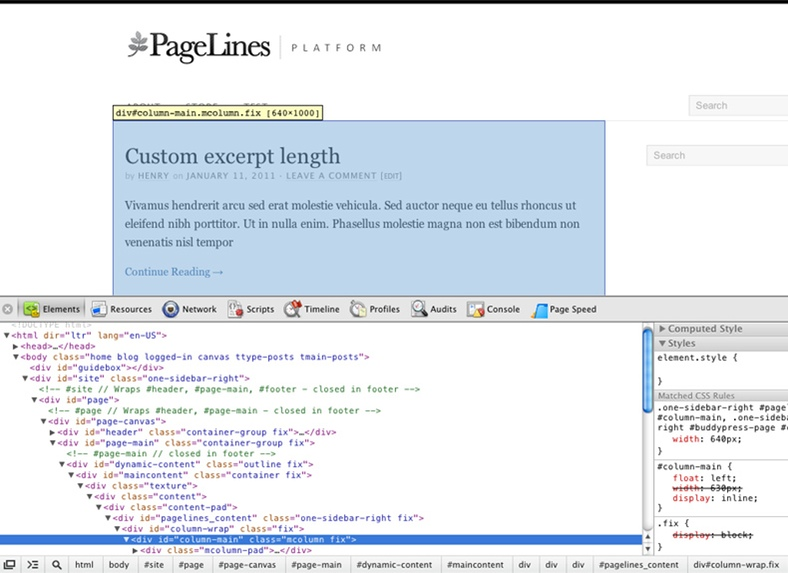
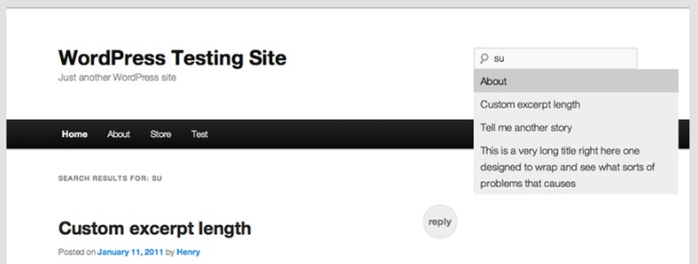

Created: 11/07/2011
By: Scott Evans
Web: scott.ee
Thank you for purchasing this plugin. If you have any questions that are beyond the scope of this help file, please feel free to email via my user page. Thanks again!
Add Google style instant search and search suggest to your WordPress powered site. This plugin will begin displaying search results as soon as your site visitor starts typing into the search box.
The plugin requires very little configuration and should work out of the box with most themes. The plugin has its own options page to configure the plugin to work with your theme if you require it. You can also tweak which WordPress fields and meta are used for the auto suggest feature.
To install this plugin:
Visit WordPress.org for a comprehensive guide on this process and more information on plugins.
For around 70% of WordPress themes instant search will just work. If you find that your instant search feature is not working then you will need to tweak the settings from within WordPress.

Head to the administration menu for the plugin within your WordPress admin panel. You will find it in 'Settings » Instant Search'.
HTML pages are made up of various sections (usually called DIVs) and these sections have unique names to describe what they do. For most WordPress themes the main content area is wrapped in a DIV with an ID of 'content'. Therefore the default setting for Instant Search is "#content". If instant search is not working then we need to change this value to match your current theme layout.
To work out what value to put in your settings you will need to view the HTML source of your theme. In the example below I am viewing the HTML from the Platform theme along side the theme itself. You can see the main content area is wrapped in a DIV with the ID of "column-main". So changing the Instant Search setting to "#column-main" fixes instant search on this theme.

For reference I used the Chrome developer tools to determine the above (as seen in the screenshot).

The suggestions feature will work out of the box on every single theme but there are a few settings to customise if you wish. You can choose which data is used to populate the suggestions:
By default WordPress does not return search results that include tags and categories, so having these enabled can result in unexpected search behaviour. We recommend you install the free Search Everything plugin to fix this.
We have purposely left the styles on the suggestion dropdown simple to fit many themes. If you wish to customise the CSS copy the iss.css file from the plugin folder (/assets/css/) to the root of your theme and edit the CSS to match your design.
New in version 1.5 is Magic Mode which alters the way the plugin behaves. With Magic Mode enabled the user is automatically transported to the post, page, custom post type or taxonomy they have selected in the suggestions list.
This feature reduces the number of clicks required for the user to access the content they are after.
A few tips for advanced customisation and tweaks:
Once again, thank you so much for purchasing this plugin. If you have a more general question relating to the plugins on CodeCanyon, you might consider visiting the forums and asking your question in the "Item Discussion" section.
Scott Evans